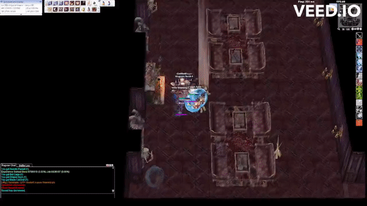

File list
This special page shows all uploaded files.
{kind=link}
{kind=link}
| Date | Name | Thumbnail | Size | User | Description | Versions |
|---|---|---|---|---|---|---|
| 12:56, 13 December 2022 | Turbo EXT 2.png (file) | 610 KB | Tamugi | 1 | ||
| 12:59, 13 December 2022 | Nova EXT 3.png (file) | 86 KB | Tamugi | 1 | ||
| 16:04, 19 December 2022 | Skills WH.png (file) | 27 KB | Hurt Locker | 1 | ||
| 14:35, 21 December 2022 | Smytsu-paper-phone.png (file) | 694 KB | Ludrath | 1 | ||
| 12:48, 25 December 2022 | Warning-gif.gif (file) |  |
12 KB | Potter | 1 | |
| 12:50, 25 December 2022 | Warning-new.png (file) | 668 bytes | Potter | 1 | ||
| 05:40, 3 January 2023 | Mage HN AncientJupe3.jpg (file) |  |
341 KB | G5457s | 1 | |
| 23:57, 3 January 2023 | ED.gif (file) |  |
1.57 MB | G00suede | 1 | |
| 00:10, 4 January 2023 | SPSS.gif (file) |  |
1.99 MB | G00suede | 1 | |
| 00:25, 4 January 2023 | Overslash.mp4 (file) | 156 KB | G00suede | 1 | ||
| 00:26, 4 January 2023 | Overslash.gif (file) |  | 1.92 MB | G00suede | 1 | |
| 00:34, 4 January 2023 | New CS.gif (file) |  |
1.95 MB | G00suede | 1 | |
| 00:43, 4 January 2023 | ROGCross.gif (file) | 1.98 MB | G00suede | 1 | ||
| 00:48, 4 January 2023 | GuardianShield.gif (file) |  |
1.83 MB | G00suede | 1 | |
| 14:25, 5 January 2023 | AirshipCrashMap1.png (file) | 3 KB | Zrzovous | 1 | ||
| 14:28, 5 January 2023 | AirshipCrashNPCs.png (file) |  |
1.19 MB | Zrzovous | 1 | |
| 12:34, 6 January 2023 | Healing ap.png (file) | 147 KB | Miyu | 1 | ||
| 19:03, 16 January 2023 | Arug cas01(Mardol).png (file) | 18 KB | Noraki | From AsteGRF - Mardol Minimap with Flag Numbers | 1 | |
| 19:03, 16 January 2023 | Arug cas02(Cyr).png (file) | .png) |
17 KB | Noraki | From AsteGRF - Cyr Minimap with Flag Numbers | 1 |
| 19:11, 16 January 2023 | Schg cas02(Andlangr).png (file) | 18 KB | Noraki | 2 | ||
| 01:13, 18 January 2023 | NewCS.gif (file) |  |
1.81 MB | G00suede | 1 | |
| 01:22, 18 January 2023 | ShieldChainNEw.gif (file) |  |
1.84 MB | G00suede | 1 | |
| 01:31, 18 January 2023 | ShieldPressDiadem.gif (file) | 1.81 MB | G00suede | 1 | ||
| 15:22, 18 January 2023 | WH.png (file) |  |
680 bytes | Hurt Locker | 1 | |
| 15:37, 18 January 2023 | WindHawk.png (file) | 508 KB | Hurt Locker | 2 | ||
| 04:33, 21 January 2023 | Pticon spirithandler.png (file) | 655 bytes | Randomced859 | 1 | ||
| 04:49, 21 January 2023 | SpiritHandler.png (file) | 32 KB | Randomced859 | 1 | ||
| 10:09, 7 February 2023 | HN Chibi Male.png (file) | 55 KB | G5457s | 1 | ||
| 10:10, 7 February 2023 | HN Chibi Female.png (file) | 53 KB | G5457s | 1 | ||
| 12:24, 14 February 2023 | Skill tree.png (file) | 49 KB | Kagi | 1 | ||
| 14:37, 14 February 2023 | Restock list.png (file) | 40 KB | Kagi | 1 | ||
| 07:56, 17 February 2023 | Image 2023-02-17 155602777.png (file) | 10 KB | Kagi | RECRUIT SET | 1 | |
| 20:02, 21 February 2023 | PhysHN AncientJupe3.jpg (file) | 368 KB | G5457s | 1 | ||
| 21:47, 23 February 2023 | PvPRG-s1.PNG (file) | 16 KB | Noraki | skill tree | 1 | |
| 21:48, 23 February 2023 | PvPRG-s2.PNG (file) | 21 KB | Noraki | skill tree | 1 | |
| 21:49, 23 February 2023 | PvPRG-s3.PNG (file) | 20 KB | Noraki | skill tree | 1 | |
| 21:49, 23 February 2023 | PvPRG-s4.PNG (file) | 16 KB | Noraki | woe hotkey | 1 | |
| 21:50, 23 February 2023 | PvPRG-s5.PNG (file) | 9 KB | Noraki | consumable hotkeys | 1 | |
| 13:32, 26 February 2023 | Might and Magic Raku and Gao.jpg (file) | 252 KB | G5457s | 1 | ||
| 17:00, 26 February 2023 | Testingnotes.png (file) |  |
63 KB | Kancell | testing notes because of atk% change | 1 |
| 13:29, 14 March 2023 | 18 01.png (file) | 124 KB | Tokeiburu | 1 | ||
| 13:39, 14 March 2023 | 18 02.png (file) | 127 KB | Tokeiburu | 1 | ||
| 13:45, 14 March 2023 | 18 03.png (file) |  |
126 KB | Tokeiburu | 1 | |
| 13:52, 14 March 2023 | 18 04.png (file) |  |
129 KB | Tokeiburu | 1 | |
| 14:02, 14 March 2023 | 18 05.png (file) |  |
129 KB | Tokeiburu | 1 | |
| 14:05, 14 March 2023 | 18 06.png (file) |  |
140 KB | Tokeiburu | 1 | |
| 14:20, 14 March 2023 | 18 07.png (file) | 130 KB | Tokeiburu | 1 | ||
| 14:29, 14 March 2023 | 18 08.png (file) | 127 KB | Tokeiburu | 1 | ||
| 15:04, 14 March 2023 | 18 09.png (file) | 129 KB | Tokeiburu | 1 | ||
| 15:04, 14 March 2023 | 18 10.png (file) | 132 KB | Tokeiburu | 1 |
{kind=link}
{kind=link}
{kind=link}
{kind=link}
{kind=link}
.png){kind=link}
{kind=link}
{kind=link}
{kind=link}
{kind=link}
{kind=link}